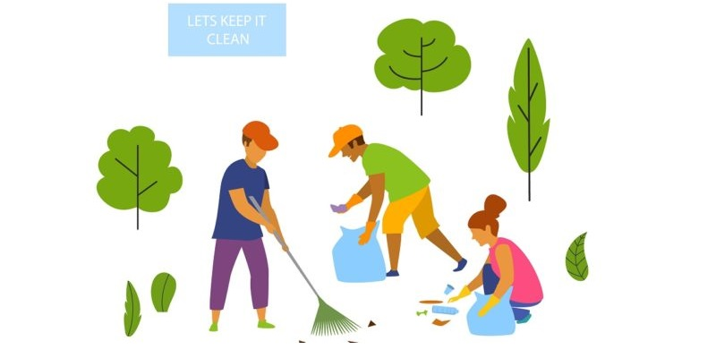

Clinical Tech
I volunteered at a local pediatric clinic focused on kids with sensory integration deficiencies or mental
disabilities ranging from aspergers to cerebral palsy. My role was mostly administrative and organizational
though I was also available to lend a hand to the therapists during gym activities. After a couple months
of visiting I was actually hired for a brief term over the summer.
Habitat for Humanity
I spent over a hundred hours volunteering for Habitat for Humanity either constructing new homes, or organizing
the local Habitat for Humanity ReStore.
Food Pantry
I've spent a couple of mornings volunteering at a local food pantry prior to thanksgiving, running food out to
cars for thanksgiving dinner.

Litter Cleanup
Volunteering for local initiatives to keep parks clean by collecting litter and debris for half a day.
Marathon Assistant
Signing in people for charitable marathon and 5k runs.
Chritsmas Angel Tree
Collected, organized, and delivered donated toys and goods at a local church.